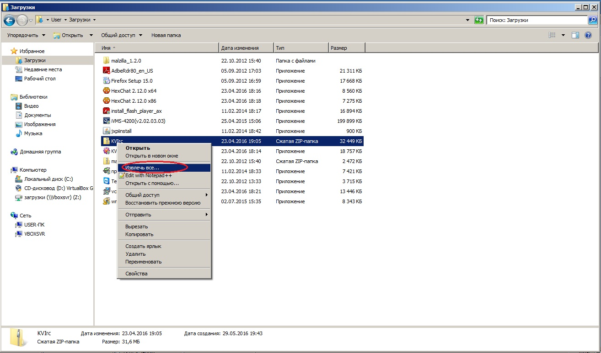
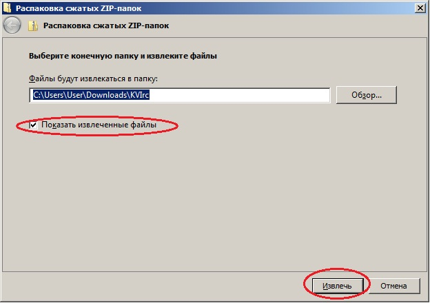
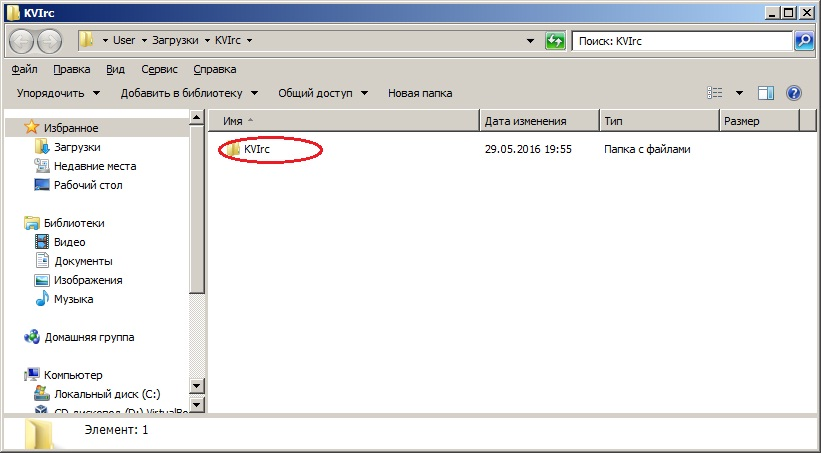
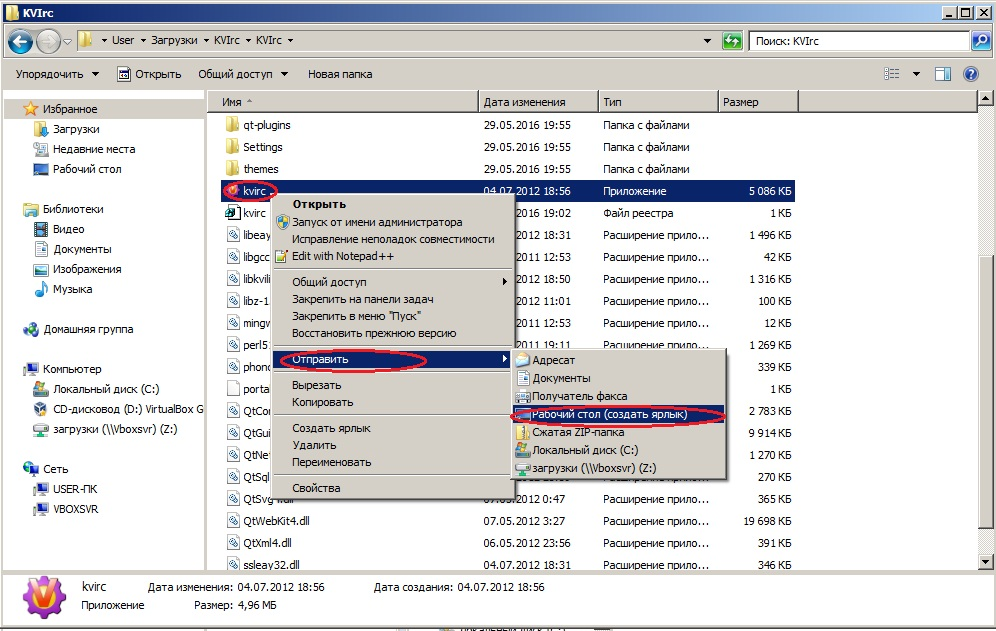
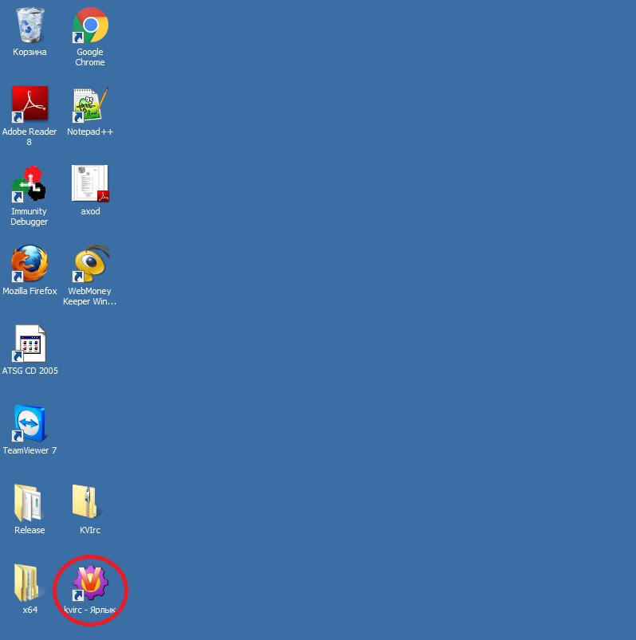
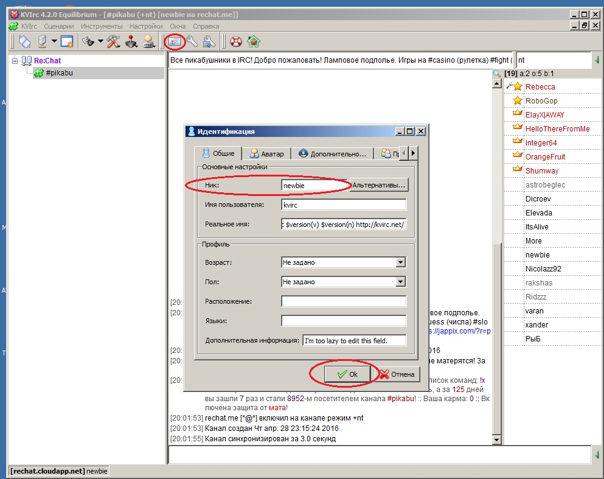
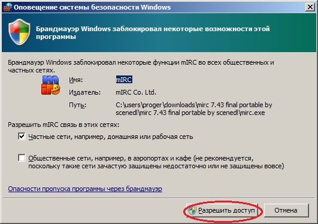

Скачать архив с программой KVirc.
СкачатьРаспокавать скаченный архив
  Создать ярлык на рабочий стол
Запустить KVirc.exe
Сменить ник.
Перезапустить KVirc
Если появится оповещение, нажмите "Разрешить доступ"
Приятного общения.